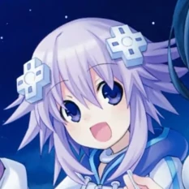
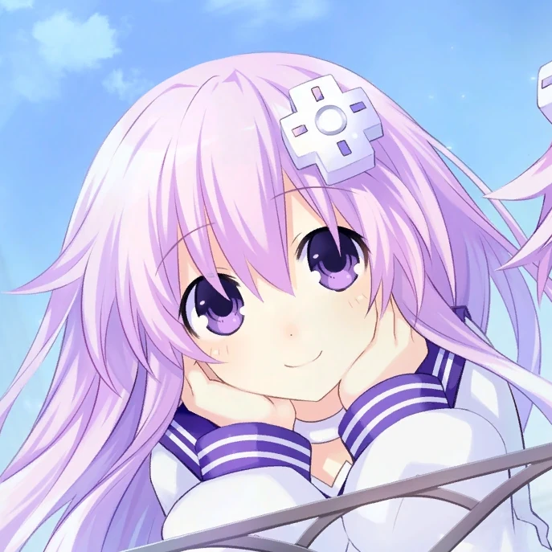

⥠ğ‘ğ„;ğğˆğ‘ğ“ğ‡ ミラクル! ✦
re-birth-mi-ra-ku-ru
multi-muse roleplay account by AeriaVelocity #VelocityMun
All Muses
Neptune🍮💎💜💙 Nepgear
⚙️💝 Plutia
🧸🎴❤️‍🔥
 Uzume
Uzume🌀🧡
 Noire
Noire⚔️🖤
 Uni
Uni🏹⬛
 Blanc
Blanc📕🤍
 Vert
Vert🎮💚 Rom
🔵🟦
 Ram
Ram🔴🟥
 Compa
Compa🥠IF
🍃
Indicators
Emoji indicators are used to denote the current speaker.
Example
⥠ğ‘ğ„;ğğˆğ‘ğ“ğ‡ ミラクル! ✦
@sxperdimensixnㅤ
{🍮} â Yoo-hoo! It's everyone's favourite protag, Neptune~! â
Neptune waves at the website visitor.
No, this isn't a real Twitter post. Looks convincing though, right?
ㅤ12:34 PM · May 6, 2023 · 69 Views
The emoji used here is 🍮, which corresponds to Neptune in her Human Form.
Guidelines
Both story and non-story RPs are welcome. Serious and non-serious RPs happen on this account.
SFW RPs are preferred, but lewd/semi-NSFW themes may appear. Proper NSFW RP should be in DMs or Twitter Circle only.
Dimension
Most of the muses on this account are from a future set in the Super Dimension (HDN 1 and/or Re;Birth 1), and they're not from the main Hyper Dimension (mk2 onwards).
This is definitely not a way for me to write around the fact I've only played Re;Birth 1 and VII.
The exception is for characters like Uzume, who either do not have a Super Dimension counterpart and/or aren't even from the Hyper Dimension to begin with.